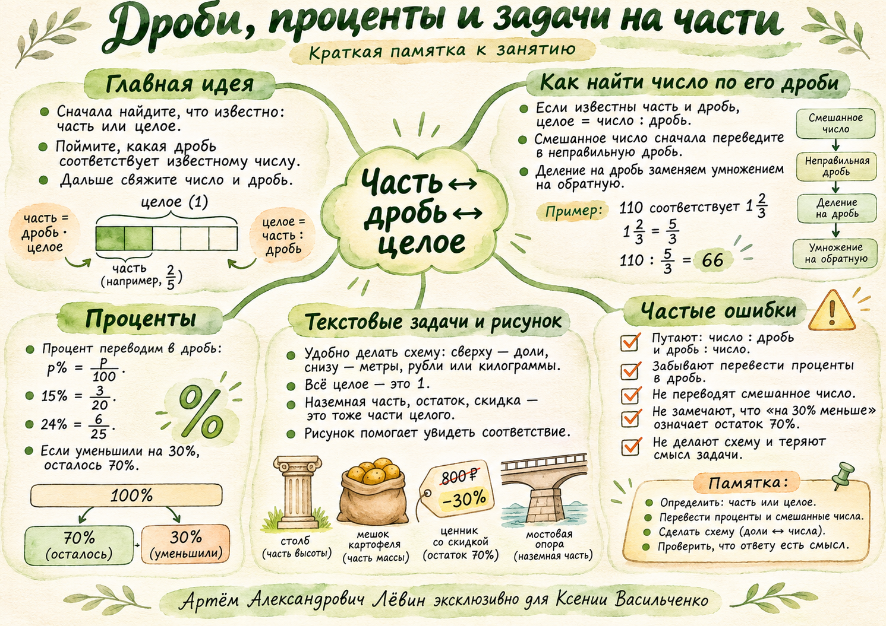

Три пятых от 40 страниц:
40 × 3/5 = 24 страницы.
Научимся узнавать целое по известной части, переводить проценты в дроби и разбирать задачи, где часть описана словами.
Часть можно назвать числом страниц, метров или килограммов. Доля показывает, какую часть целого она составляет. Всё исходное количество принимаем за единицу.
Три пятых от 40 страниц:
40 × 3/5 = 24 страницы.
18 страниц составляют три двадцатых книги:
18 : 3/20 = 18 × 20/3 = 120.
Для восстановления целого делим число, соответствующее части, на её ненулевую долю. Убедитесь, что доля относится именно к известной части.
Проверить связь на схеме долей ↗Переводим проценты в дроби делением на 100. Затем применяем ту же формулу «часть — целое — доля».
15/100 сокращается на 5.
24/100 сокращается на 4.
30/100 сокращается на 10.
36 : 3/20 = 36 × 20/3 = 240 страниц.
Здесь 36 страниц соответствуют именно 15% всей книги.
Перед делением удобно представить смешанные и десятичные числа в виде обыкновенных дробей. Деление на дробь заменяем умножением на обратную.
Если 110 соответствует 1 2/3 некоторого числа, то всё число: 110 : 5/3 = 66.
| Слова в условии | Доля |
|---|---|
| Пятая часть | 1/5 |
| Третья часть | 1/3 |
| Половина | 1/2 |
| Половина и ещё четверть | 1/2 + 1/4 = 3/4 |
1/2 + 1/4 = 3/4;
102 : 3/4 = 102 × 4/3 = 136 страниц.
Вычислительная памятка: 13,5 : 0,09 = 1350 : 9 = 150. При делении на 10, 100, 1000 запятая переносится влево на 1, 2, 3 разряда.
Когда известна проданная, потраченная или подземная часть, сначала вычисляем, сколько осталось от единицы. Соответствующая доля позволит найти целое.
После продажи 3/11 массы осталось 5 1/2 кг.
5 1/2 : 8/11 = 121/16 = 7 9/16 кг.
В тренировке: заглублено 2/9 длины, над землёй 5 1/4 м.
Надземная доля: 1 − 2/9 = 7/9.
5 1/4 : 7/9 = 6 3/4 м.
Важное различие: известна сама величина уменьшения или значение после уменьшения? От ответа зависит, на какой процент делить.
57,6 рубля соответствует 24% первоначальной цены.
57,6 : 6/25 = 240 руб.
После скидки: 240 − 57,6 = 182,4 руб.
56 часов соответствуют оставшимся 70% прежнего времени.
56 : 7/10 = 80 ч.
Проверка: 30% от 80 — это 24; 80 − 24 = 56.
Решайте по порядку, отмечайте выполненное. Отметки сохраняются в браузере. Ответы откройте после решения.
Выполнено: 0 из 10
| № | Ответ |
|---|---|
| 1 | 24 |
| 2 | 42 страницы |
| 3 | 36 |
| 4 | 30 |
| 5 | 240 страниц |
| 6 | 80 страниц |
| 7 | 60 страниц |
| 8 | 6 3/4 м |
| 9 | 300 руб. первоначально; 246 руб. после скидки |
| 10 | 90 часов |
Чек-лист можно распечатать, постер — сохранить как памятку, а лабораторию — использовать для исследования долей.

Вернуться к карте компетенций ↗